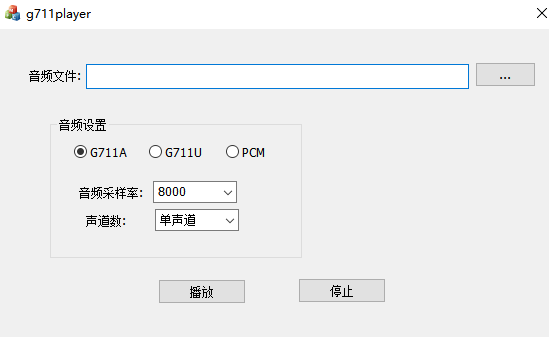

对讲功能开发
- 一、APP监听设备端音频
- 开发流程：
- 在IPC_APP_Init_SDK中IPC_APP_Set_Media_Info设置音频参数
/* Audio stream configuration.
Note: The internal P2P preview, cloud storage, and local storage of the SDK are all use E_CHANNEL_AUDIO data. */
s_media_info.channel_enable[E_CHANNEL_AUDIO] = TRUE; /* Whether to enable local sound collection */
s_media_info.audio_codec[E_CHANNEL_AUDIO] = TUYA_CODEC_AUDIO_PCM;/* Encoding format */
s_media_info.audio_sample [E_CHANNEL_AUDIO]= TUYA_AUDIO_SAMPLE_8K;/* Sampling Rate */
s_media_info.audio_databits [E_CHANNEL_AUDIO]= TUYA_AUDIO_DATABITS_16;/* Bit width */
s_media_info.audio_channel[E_CHANNEL_AUDIO]= TUYA_AUDIO_CHANNEL_MONO;/* channel */
s_media_info.audio_fps[E_CHANNEL_AUDIO] = 25;/* Fragments per second */
channel_enable：使能音频通道，默认是TRUE为开启状态，当产品定义不需要麦克风输入的时候可以选择FALSE关闭
audio_codec：音频的编码格式，目前支持PCM，G711U，G711A，AAC（AAC_ADTS主要用于chromecast功能的音频，后面会详细论述）
audio_sample：采样频率默认8K
audio_databits：采样位数默认16位
在开发语音监听功能时需要仔细核对以上编码信息是否和设备编码器编码出来的音频的编码信息一致
- 调用TUYA_APP_Init_Ring_Buffer参数初始化音频通道，在这个函数中主要调用tuya_ipc_ring_buffer_init函数来初始化视频通道
/* initialize one ring buffer for one stream(one channel)
channel: ring buffer channel num, multipul channel for one
bitrate: bitrate in Kbps
fps: framerate pre second
max_buffer_seconds: should be more than 1 GOP and less than 10 sencond. Set to 0 as default(10s).
requestIframeCB: call back function to request one I frame from video decoder. set to NULL if not needed or for NON-video stream.
*/
OPERATE_RET tuya_ipc_ring_buffer_init(CHANNEL_E channel, UINT_T bitrate, UINT_T fps, UINT_T max_buffer_seconds, FUNC_REQUEST_I_FRAME requestIframeCB);
需要注意的是:
max_buffer_seconds：音频开发默认0就可以
requestIframeCB：音频开发默认NULL就可以
- 调用TUYA_APP_Put_Frame往视频通道塞音频数据，主要调用tuya_ipc_ring_buffer_append_data往具体的某个通道塞流
/* append new frame into a ring buffer
*/
OPERATE_RET tuya_ipc_ring_buffer_append_data(CHANNEL_E channel, UCHAR_T *addr, UINT_T size, MEDIA_FRAME_TYPE_E type, UINT64_T pts);
参数说明：主要包含通道号，数据帧的大小类型等
- 特别说明：
1、以上步骤就是app监听功能开发的核心流程
2、音频上传最大长度为1400
3、FAQ
4、音频卡顿，异响问题排查方法：在音频数据送入SDK之前将音频数据保存到sd卡，PC端使用g711player去播放，看是否异常 - 二、设备端播放App发送过来的音频
- 开发流程：
- 在 TUYA_APP_Enable_Speaker_CB 函数中实现喇叭的开关控制
/* Callback of talkback mode,turn on or off speaker hardware*/
VOID TUYA_APP_Enable_Speaker_CB(BOOL_T enabled)
{
printf("enable speaker %d \r\n", enabled);
//TODO
/* Developers need to turn on or off speaker hardware operations.
If IPC hardware features do not need to be explicitly turned on, the function can be left blank. */
}
在TUYA_APP_Rev_Audio_CB函数中处理app下发过来的音频数据，App 默认下发 G711U 格式音频，下发长度为320
VOID TUYA_APP_Rev_Audio_CB(IN CONST MEDIA_FRAME_S *p_audio_frame, TUYA_AUDIO_SAMPLE_E audio_sample, TUYA_AUDIO_DATABITS_E audio_databits, TUYA_AUDIO_CHANNEL_E audio_channel) { printf("rev audio cb len:%u sample:%d db:%d channel:%d\r\n", p_audio_frame->size, audio_sample, audio_databits, audio_channel); //PCM-Format 8K 16Bit MONO //TODO /* Developers need to implement the operations of voice playback*/ }App 默认下发 G711U 格式音频，设备端如需以 PCM 格式播放，需要调用函数： tuya_g711_decode 对下发的音频做转码处理
int tuya_g711_encode(unsigned char type, unsigned short *src, unsigned int srcLen, unsigned char *drc, unsigned int *pOut);
int tuya_g711_decode(unsigned char type, unsigned short *src, unsigned int srcLen, unsigned char *drc, unsigned int *pOut);
int tuya_g711_encode_16K(unsigned char type, unsigned short *src, unsigned int srcLen, unsigned char *drc, unsigned int *pOut);